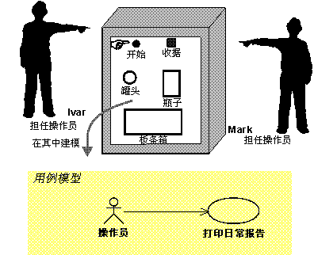
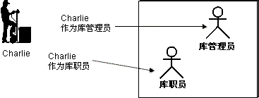
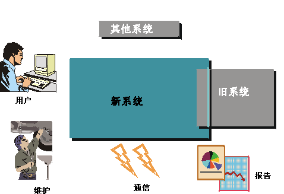
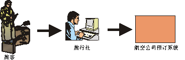
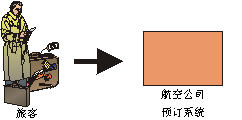

| 指南：参与者 |
 |
|
| 相关元素 |
|---|
说明要全面理解系统的目的，必须了解系统面向的对象，即谁将使用该系统。不同的用户类型表示为参与者。 参与者是指与系统交换数据的任何对象。 参与者可以是用户、外部硬件或其他系统。 参与者和单个系统用户的区别在于参与者表示特定类别的用户，而不是一个实际用户。多个用户可以扮演同一个角色，这表示这些用户可以是同一个参与者。在该情况下，每个用户均构成该参与者的一个实例。  Ivar 和 Mark 是回收机器的操作员。当他们使用机器时，他们每个人均由参与者“操作员”的一个实例表示。 但在某些情况下，只有一个人扮演参与者所模拟的角色。例如，对于相当小的系统，可能只有一个人扮演系统管理员的角色。 同一个用户也可以充当多个参与者（即，同一个人可以担当不同的角色）。  Charlie 主要作为仓库管理员来使用仓库处理系统，但有时他也作为普通的仓库人员来使用仓库处理系统。 如何查找参与者 系统环境中的哪些项将成为该系统的参与者？ 首先考虑将要使用该系统的个人。如何对他们进行归类？记住少数几个人（两三个）并确保所确定的参与者涵盖了他们的需要，这通常是好习惯。在您确定参与者时，思索下面这组问题是有用的：
一个系统环境有多个不同的方面可表示为单独的参与者：
示例：对于仓库处理系统（它支持仓库中的工作），有几类用户：仓库人员、订单登记职员和仓库管理员。所有这些类别都在系统中具有特定角色，因此应该用单独的参与者表示每一个角色。
示例：在用于回收罐头、瓶子和板条箱的回收机器中，客户是主要参与者，是构建系统的主要目标对象。但必须有人管理机器。该角色由参与者“操作员”表示。
示例：控制大楼温度的通风系统从大楼中的传感器不断获取计量数据。因此，传感器是参与者。
示例：自动柜员机必须与掌握银行帐户的中央系统进行通信。中央系统可能是外部系统，因此应该是参与者。 如果正在构建基于 Internet 的应用程序，那么您的主要参与者在某种意义上将是匿名的。您并不真正知道他们是谁，并且无法对他们的技能和背景作任何假设。但您仍可以描述您希望他们对系统扮演的角色。 示例： 提供信息的系统（如搜索引擎）将具有完全匿名的参与者，这些参与者使用应用程序只是为了查找有关特定主题的信息。 示例： 政府信息站点，旨在向任何公民或“网民”提供有关法律和规章、惯例、制度等的信息。例如在美国，美国国内税局就具有提供有关如何填写纳税申报单的信息的页面。这包括以电子方式提供所有表单，并允许个人以电子方式提交其纳税申报单。该例中主要参与者的角色是对如何在美国提交纳税申报单感兴趣的任何人。当然，一旦某人尝试提交纳税申报单，她就不再是匿名的了。 参与者帮助定义系统边界查找参与者还意味着建立系统边界，这有助于了解系统的目的和范围。只有那些直接与系统通信的角色需要被视为参与者。如果您将包含比系统环境中更多的角色，请尝试对要使用系统的业务（而不是系统本身）建模。 示例：在航空订票系统中，参与者将是什么？这取决于您是否在构建要用于旅行社的航空订票系统，或者是否在构建乘客可通过 Internet 直接连接的系统。  如果您在构建要用于旅行社的航空订票系统，则参与者将是旅行社。旅行者不直接与该系统交互，因此不是参与者。  如果您在构建允许用户通过 Internet 连接的订票系统，旅行者将直接与系统交互，因此旅行者是系统的参与者。 简述参与者的简述应包括关于以下几方面的信息：
简述的长度应最多为几句话。 示例：在回收机器的用例模型中，三个参与者简述如下： 客户：客户在家收集瓶子、罐头和板条箱并将它们带回商店，以获得退款。 操作员：操作员负责回收机器的维护。 管理员：管理员负责有关商店向客户提供的金额和服务的问题。 参与者特征参与者的属性可能影响系统的开发方式，特别是如何可视化地形成可用性最佳的用户界面。请注意，如果对应于参与者的业务工作者已经在业务对象模型中作了描述，则可能已经获取了以下属性中的一部分。参与者属性包括：
在大多数情况下，大致估计用户数量和使用频率就足够了。30 和 40 之间的差别将不会影响用户界面的形成，但 3 和 30 之间的差别可能会有影响。 其他参与者属性包括：
这些属性主要在确定边界类和原型时使用，以确保用户团体与用户界面设计之间的配合达到最佳可用性。 示例：下面是“邮件用户”参与者的属性示例。这是与“管理进入的邮件消息”用例交互的参与者（还包括其他参与者）。
|
© Copyright IBM Corp. 1987, 2006. All Rights Reserved. |